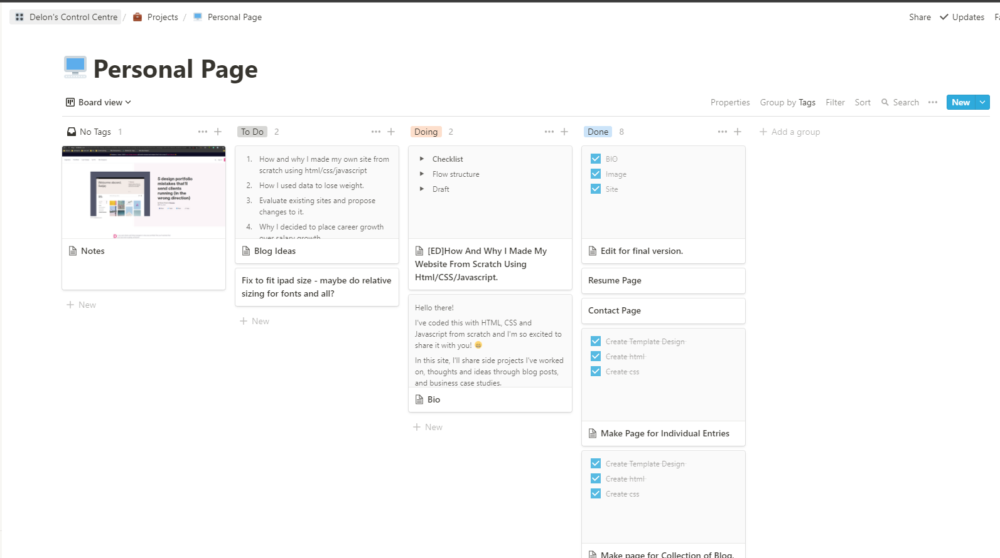
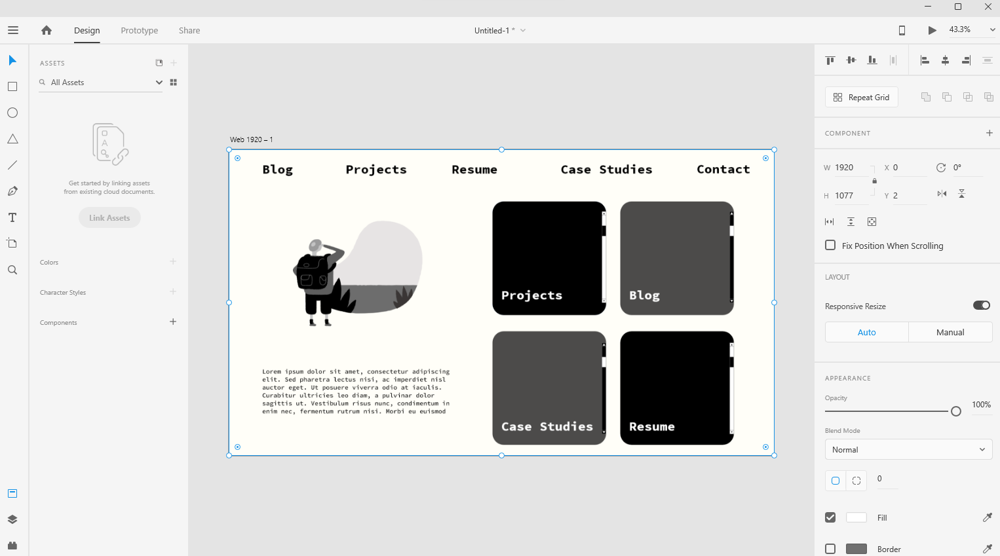
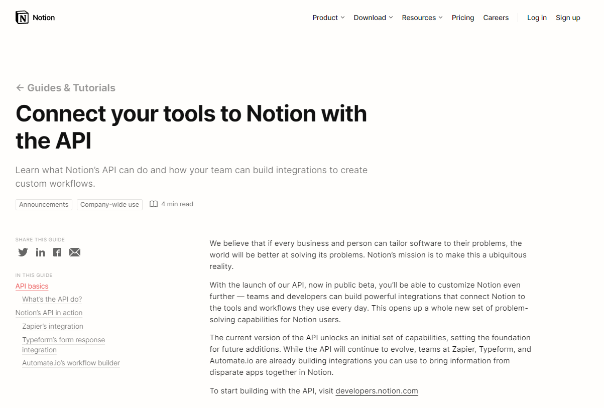

Most people who take their personal brand seriously would have a website nowadays. They’d use it to share their ideas, experiences, and work. People in the creative field, such as designers, artists, and photographers, were the first few to focus on building personal websites. And it makes sense. It represents a space where they can showcase their work. Providing a peering look into who the creative individuals are. The website serves as an extension of the creative individual’s identity.
With personal websites painting a clearer picture of a professional’s identity better than a resume, more people wanted their own. This gave rise to website building services such as Wix and Squarespace. Individuals didn’t need to know how to code to have their website, which led to people in multiple industries and professions having their websites. A marketer would have a website sharing his marketing case studies, or an engineer would write about his experiences installing equipment. The benefit is clear—a space for them to create a narrative of their professional self. The space allows prospective employers and collaborators to understand them without needing to meet.
I’ve decided to make my website from scratch using Html, CSS, and Javascript even though creating a personal website is easy nowadays. The reason for this is that I wanted to challenge myself and put what I’ve learnt about web development into practice. I’ve spent time learning this new skill during lock-down, and I wanted to solidify what I’ve learnt.
How I Approached It
Managing the project
I manage this project using a Kanban board in Notion where I categorize tasks into 'To-Do', 'Doing', and 'Done'.

Here’s a top-line view:
- Design the site using Adobe XD.
- Code the HTML template with placeholder contents
- Style each page with CSS
- Test to see if it looks good on mobile and desktop.
- Replace the placeholder contents with actual contents.
Design the site using Adobe XD.

Adobe XD is a design tool for web apps and mobile apps. It was my first time using it, and I only learnt what I needed to learn to turn my vision into reality. Thank god for Youtube tutorials.

The inspiration for the site’s design came from Notion. I’ve long admired Notion’s visual identity since I first laid eyes on it. It’s sleek, simple, and elegant. And I am drawn to their two main colours. White and black. It’s easy on the eye, and it makes me feel calm looking at it. Notion inspired the colour palette choice of black, grey, and eggshell white.
The decision to use “Consolas” as the main font is because I wanted to pay homage to what most IDE and Source Code Editors use. IDE and Source Code editors are where people write their code.
Code the HTML template with placeholder contents
I enjoy setting up websites and coding projects because we have to set up a structure first. Think of HTML files as the structure of a house. It dictates the looks of the house without the paint and furniture. I enjoy setting up structures before attempting anything. Naturally, this was an enjoyable part for me.
Styled each page with CSS
If HTML is about building a house’s structure. CSS is how you would decorate the house. In web design, it’s about what colour your site will be, what fonts you’d use, etc.
Test to see if it looks good on mobile and desktop.
With most web usage coming from mobile these days, how the site would look based on what device you are surfing from is important. You don’t want someone using their phone to be seeing a site optimised for a desktop view. This process was a challenge because the sizing of elements was not doing what I intended. So this was where I spent most of the time.
Replace the placeholder contents with actual contents.
After I completed everything, the next step would be to populate the site with actual content. That encompasses uploading my resume, inserting my contact details, and writing some blog entries.
Here’s What I Learnt
Things are difficult the first time you do it, but it gets easier.
Creating this site took a long time because every problem I encountered was a first. I had no knowledge and experience on how to manoeuvre through the issues, which led me to spend a lot of time figuring out solutions. But as you place yourself in situations that force you to fail, you gain more experience, and you’ll equip yourself with the knowledge to overcome problems in the future. It’s like, “oh, I’ve encountered a similar problem in the past before and doing ABC was effective in solving it.”
Understanding the fundamentals of any discipline takes you a long way.
Pareto’s principle states that 80% of the effects come from 20% of the causes. By understanding the 20% of a subject, you could do 80% of the most common things within the subject. For example, by learning 20% of all English words in a dictionary, you can use words that people use 80% of the time. By understanding the basics, we could go through a subject easier. Even when we encounter a problem, we could develop solutions by establishing connections because we have the foundation to build our hunches.
Conclusion
I am grateful to have gone through this journey, as it helped brush up my web development skills and gave me confidence. Looking forward, this whole “taking on something new by its horns” will not seem as daunting, given that I progressed through this whole website building project. I want to end by saying, don’t be afraid of taking on new projects. Even though it might seem daunting at first, stay patient, grind, and you’ll thank yourself for going through it.